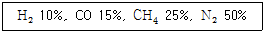
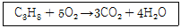

가스산업기사 (2002-09-08 기출문제)
1과목: 연소공학
1. 불완전연소에 의한 매연,먼지등을 제거하는 집진장치 중 건식 집진장치가 아닌 것은?
- 백필터
- 사이클론
- 멀티클론
- 사이클론스크레버
(정답률: 70%)

2. 연소속도에 영향을 주는 인자가 아닌 것은?
- 온도
- 압력
- 가스의 부피
- 가스의 조성
(정답률: 81%)
3. 발화지연에 대한 설명으로 맞는 것은?
- 저온, 저압일수록 발화지연은 짧아진다.
- 어느 온도에서 가열하기 시작하여 발화시까지 걸린 시간을 말한다.
- 화염의 색이 적색에서 청색으로 변하는데 걸리는 시간을 말한다.
- 가연성가스와 산소의 혼합비가 완전 산화에 가까울수록 발화지연은 길어진다.
(정답률: 87%)
4. 다음은 유동층 연소의 특성에 대한 설명이다. 이 중 틀린 것은?
- 연소시 화염층이 작아진다.
- 크링커 장해를 경감할 수 있다.
- 질소산화물(NOx)의 발생량이 증가한다.
- 화격자의 단위 면적당 열부하를 크게 얻을 수 있다.
(정답률: 64%)
5. 연소시 배기가스 중의 질소산화물(NOx)의 함량을 줄이는 방법중 적당하지 않은 것은?
- 굴뚝을 높게한다.
- 연소온도를 낮게한다.
- 질소함량이 적은 연료를 사용한다.
- 연소가스가 고온으로 유지되는 시간을 짧게한다.
(정답률: 84%)
6. 다음의 연소와 폭발에 관한 설명중 틀린 것은?
- 연소란 빛과 열의 발생을 수반하는 산화반응이다.
- 분해 또는 연소등의 반응에 의한 폭발원인은 화학적 폭발이다.
- 발열속도＞방열속도인 경우 발화점이하로 떨어져 연소 과정에서 폭발로 이어진다.
- 폭발이란 급격한 압력의 발생 또는 음향을 내며 파열 되거나 팽창하는 현상이다.
(정답률: 83%)
7. 연소공기비가 표준보다 큰 경우 어떤 현상이 발생하는가?
- 매연 발생량이 적어진다.
- 배가스량이 많아지고 열효율이 저하된다.
- 화염온도가 높아져 버너에 손상을 입힌다.
- 연소실 온도가 높아져 전열효과가 커진다.
(정답률: 63%)
8. 다음 가스 중 연소범위가 가장 작은 것은?
- 수소
- 프로판
- 암모니아
- 프로필렌
(정답률: 75%)
9. 메탄 60%, 에탄 30%, 프로판 5%, 부탄 5% 인 혼합가스의 공기중 폭발하한값은? (단, 각 성분의 하한값은 메탄 5%, 에탄 3%, 프로판 2.1%, 부탄 1.8%이다.)
- 3.8
- 7.6
- 13.5
- 18.3
(정답률: 76%)
10. CmHn 1Nm3가 연소해서 생기는 H2O의 양(Nm3)은 얼마인가?
- n/4
- n/2
- n
- 2n
(정답률: 80%)
11. 0℃, 1 atm 에서 10m3 의 다음 조성을 가지는 기체연료의 이론공기량은?

- 29.8m3
- 20.6m3
- 16.8m3
- 8.7m3
(정답률: 42%)
12. 이상기체를 일정한 부피에서 가열하면 압력과 온도의 변화는 어떻게 되는가?
- 압력증가 온도상승
- 압력증가 온도일정
- 압력일정 온도상승
- 압력일정 온도일정
(정답률: 86%)
13. 다음 중 폭발방지를 위한 본질안전장치에 해당되지 않는 것은?
- 압력 방출장치
- 온도 제어장치
- 조성 억제장치
- 착화원 차단장치
(정답률: 41%)
14. 증기속에 수분이 많을 때 일어나는 현상은?
- 증기손실이 적다.
- 증기엔탈피가 증가된다.
- 증기배관에 수격작용이 방지된다.
- 증기배관 및 장치부식이 발생된다.
(정답률: 86%)
15. 다음은 폭굉을 일으킬 수 있는 기체가 파이프 내에 있을 때 폭굉 방지 및 방호에 관한 내용이다. 옳지 않은 사항은?
- 파이프의 지름대 길이의 비는 가급적 작도록 한다.
- 파이프 라인에 오리피스 같은 장애물이 없도록 한다.
- 파이프 라인을 장애물이 있는 곳은 가급적이면 축소 한다.
- 공정 라인에서 회전이 가능하면 가급적 완만한 회전을 이루도록 한다.
(정답률: 82%)
16. 폭굉이 발생하는 경우 파면의 압력은 정상연소에서 발생하는 것보다 일반적으로 얼마나 큰가?
- 2배
- 5배
- 8배
- 10배
(정답률: 81%)
17. 밀폐된 용기내에 1atm, 27℃ 프로판과 산소가 부피비로 1: 5의 비율로 혼합되어 있다. 프로판이 다음과 같이 완전연소하여 화염의 온도가 1000℃가 되었다면 용기내에 발생하는 압력은 얼마가 되겠는가?

- 1.95atm
- 2.95atm
- 3.95atm
- 4.95atm
(정답률: 57%)
18. 어떤 혼합가스가 산소 10몰, 질소 10몰, 메탄 5몰을 포함하고 있다. 이 혼합가스의 비중은 얼마인가? (단, 공기의 평균분자량:29임)(오류 신고가 접수된 문제입니다. 반드시 정답과 해설을 확인하시기 바랍니다.)
- 0.52
- 0.62
- 0.72
- 0.82
(정답률: 33%)
19. 불꽃 중 탄소가 많이 생겨서 황색으로 빛나는 불꽃은?
- 휘염
- 층류염
- 환원염
- 확산염
(정답률: 79%)
20. 기체 연료의 특성을 설명한 것이다. 맞는 것은?
- 가스 연료의 화염은 방사율이 크기 때문에 복사에의한 열전달률이 작다.
- 기체연료는 연소성이 뛰어나기 때문에 연소 조절이 간단하고 자동화가 용이하다.
- 단위 체적당 발열량이 액체나 고체연료에 비해 대단히 크기 때문에 저장이나 수송에 큰 시설을 필요로 한다.
- 저 산소 연소를 시키기 쉽기 때문에 대기오염 물질인 질소산화물(NOx)의 생성이 많으나 분진이나 매연의 발생은 거의 없다.
(정답률: 66%)
2과목: 가스설비
21. 액화천연가스(LNG)의 탱크로서 저온수축을 흡수하는 기구를 가진 금속박판을 사용한 탱크는?
- 프레스트래스트 콘크리이트제탱크
- 동결식 반지하탱크
- 금속제 이중구조탱크
- 금속제 멤브레인탱크
(정답률: 74%)
22. 다음 중 회전펌프에 해당되지 않는 것은?
- 기어펌프
- 나사펌프
- 베인펌프
- 피스톤펌프
(정답률: 73%)
23. 최고 충전압력이 150atm 인 용기에 산소가 35℃ 에서 150atm 으로 충전되었다. 이 용기가 화재로 온도가 상승하여 안전밸브가 작동했다면 이 때 산소의 온도는?
- 104℃
- 120℃
- 162℃
- 138℃
(정답률: 39%)
24. 다음 중 역류방지 밸브에 해당되지 않는 것은?
- 볼체크 밸브
- y형 나사밸브
- 스윙형 체크밸브
- 리프트형 체크밸브
(정답률: 74%)
25. 다음 고압가스 제조장치의 재료에 대한 설명으로 틀린 것은?
- 상온건조 상태의 염소가스에서는 보통강을 사용해도 된다.
- 암모니아 아세틸렌의 배관재료에는 구리재를 사용해도 된다.
- 탄소강의 충격치는 -70℃ 부근에서 거의 0으로 된다.
- 암모니아 합성탑 내통의 재료에는 18-8 스테인레스강을 사용 한다.
(정답률: 71%)
26. 다음 정전기 제거 또는 발생방지 조치에 관한 설명이다. 관계가 먼 것은?
- 대상물을 접지 시킨다.
- 상대습도를 높인다.
- 공기를 이온화 시킨다.
- 전기 저항을 증가 시킨다.
(정답률: 76%)
27. 최고 사용온도가 100℃,길이ℓ =10m 인 배관을 상온(15℃)에서 설치하였다면 최고온도 사용시 팽창으로 늘어나는 길이는 몇 mm 인가? (단,선팽창계수 α =12x10-6 m/m℃)
- 5.1 mm
- 10.2 mm
- 102 mm
- 204 mm
(정답률: 64%)
28. 온도가 120℃ 를 초과하는 경우에 온수보일러에 안전밸브를 설치하여야 하는데 안전밸브의 호칭 지름은 몇 mm 이상으로 하는가
- 16mm
- 20mm
- 26mm
- 32mm
(정답률: 56%)
29. 펌프에서 발생하는 현상이 아닌 것은?
- 초킹(Choking)
- 서어징(Surging)
- 수격작용(Water hammering)
- 캐비테이숀(Cavitation)
(정답률: 78%)
30. 특수강에 내마멸성 내식성을 부여하기 위하여 첨가하는 원소는?
- 니켈
- 크롬
- 몰리브덴
- 망간
(정답률: 75%)
31. 고압가스 용기의 충전구에 관한 내용 중 옳은 것은?
- 가연성 가스의 경우 대개 오른 나사이다.
- 충전가스가 암모니아인 경우 왼 나사이다.
- 가스 충전구는 나사가 없을수는 없다.
- 가연성 가스의 경우 대개 왼 나사이다.
(정답률: 79%)
32. 탄화수소와 수증기의 반응을 이용하여 가스를 제조할 때 반응후 생성되지 않는 것은?
- CO
- SO2
- H2O
- CO2
(정답률: 81%)
33. 도시가스 공장에 내용적 25(m3) 의 저장탱크가 2개 설치되어있다. 총저장 능력은 몇 톤 인가? (단, 도시가스비중:0.71)
- 35.50
- 45.50
- 53.40
- 63.40
(정답률: 36%)
34. 정압기를 평가, 선정할 경우에는 정압기의 각 특성이 사용 조건에 적합하도록 선정하여야 한다. 다음 정압기 평가 및 선정과 관계가 먼 특성은?
- 정특성
- 동특성
- 유량특성
- 혼합특성
(정답률: 72%)
35. 다음 용어 정의 중 틀리게 설명한 것은 어느것 인가?
- "액화석유가스"라 함은 프로판 부탄을 주성분으로 한 가스를 액화한 것을 말한다.
- "액화석유가스충전사업"은 액화석유가스를 용기에 충전하여 공급하는 사업을 말한다.
- "액화석유가스판매사업"은 용기에 충전된 액화석유가스를 판매하는 것을 말한다.
- "가스용품제조사업"은 일반고압가스를 사용하기 위한 가스용품을 제조하는 사업을 말한다.
(정답률: 54%)
36. 저압 가스 배관에서 관의 내경이 1/2 배로 되면 유량은 몇 배로 되는가? (단, 다른 모든 조건은 동일한 것으로 본다.)
- 0.17
- 0.50
- 2.00
- 4.00
(정답률: 42%)
37. 배관의 관경:40mm, 길이:100m 인 배관에 비중1.5 인 가스를 저압으로 공급시 압력손실이 30mmH20 발생되었다.이때 배관을 통과하는 가스의 시간당 유량은 얼마인가? (단, Pole상수는 0.707)
- 10.1m3/h
- 1.4m3/h
- 5.5m3/h
- 15.1m3/h
(정답률: 49%)
38. 왕복식 압축기에서 실린더를 냉각시켜서 얻을 수 있는 냉각 효과가 아닌 것은?
- 윤활유의 질화방지
- 윤활기능의 유지향상
- 체적효율의 감소
- 압축효율의 증가(동력감소)
(정답률: 69%)
39. 매설관의 전기방식법 중 유전 양극법에 대한 설명으로 틀린 것은?
- 희생양극을 사용하여 관로의 부식 전위차를 제거한다.
- 양극은 소모되므로 보충할 필요가 없다.
- 타 매설물에의 간섭이 거의 없다.
- 방식전류의 세기(강도)의 조절이 자유롭다.
(정답률: 36%)
40. 고온,고압하에서 수소를 사용하는 장치공정의 재질은 어느 재료를 사용 하는가?
- 탄소강
- 크롬강
- 조강
- 실리콘강
(정답률: 82%)
3과목: 가스안전관리
41. 독성액화 가스를 차량으로 운반할 때 몇 kg 이상 이면 한국가스안전공사에서 실시하는 운반에 관한 소정의 교육을 이수한 사람 또는 운반 책임자가 동승해야만 하는가? (단, 허용농도가 100 만분의 1 이상일 경우)
- 6,000kg
- 3,000kg
- 2,000kg
- 1,000kg
(정답률: 70%)
42. 액화석유가스 충전사업자가 가스공급시마다 실시하는 안전점검 기준으로 점검하지 않아도 되는 것은?
- 충전용기의 설치위치
- 가스용품의 관리 및 작동상태
- 충전용기와 화기와의 거리
- 충전량 표시 증지의 부착 여부확인
(정답률: 59%)
43. 고압가스 충전용기의 운반에 관한 사항으로 바르지 않은 것은?
- 밸브가 돌출된 충전용기는 고정식 프로텍터를 부착시켜야 한다.
- 충전용기를 로프로 견고하게 결속해야 한다.
- 충전용기는 항상 40℃ 이하로 유지해야 한다.
- 운반시 보기쉬운 곳에 황색글씨로 위험표시를 하여야한다.
(정답률: 72%)
44. 액화산소 탱크에 설치하여야 할 안전밸브의 작동압력은 어느 것인가?
- 내압시험압력 × 1.5배 이하
- 상용압력 × 0.8배 이하
- 내압시험압력 × 0.8배 이하
- 상용압력 × 1.5배 이하
(정답률: 42%)
45. 고압가스 용기중 잔가스를 배출하고자 할 때 안전관리상 바른 방법은?
- 잔가스 배출이므로 소화기를 준비하지 않아도 된다.
- 통풍이 양호한 옥외에서 서서히 배출시킨다.
- 통풍이 양호한 구조물내에서 급속히 배출시킨다.
- 기존용기보다 큰 용기로 이송시킨다.
(정답률: 84%)
46. 액화석유가스의 저장설비 및 가스설비실의 통풍구조에 대한 설명 중 옳은 것은?
- 사방을 방호벽으로 설치하는 경우 한방향으로 2개소의 환기구를 설치 한다.
- 환기구의 1개소 면적은 2,400 cm2 이하로 한다.
- 강제통풍 시설의 방출구는 지면에서 2M 이상의 높이에 설치 한다.
- 강제통풍 시설의 통풍능력은 1m 마다 0.3m3/ 분으로 한다.
(정답률: 64%)
47. 메탄:50%, 에탄:30%, 프로판:20% 인 혼합가스의 공기중 폭발하한계는 얼마인가? (단, 메탄, 에탄, 프로판의 공기중 폭발하한계는 각각 5%, 3%, 2% 이다.)
- 4.2%
- 3.3%
- 2.8%
- 2.3%
(정답률: 78%)
48. 냉동제조의 시설기준으로 안전장치를 설치해야 할 경우 내용이 틀린 것은?
- 암모니아 및 브롬화메탄을 저장하는 저장소에 방폭 구조로 할 것
- 냉매가스의 압력이 설계압력이상인 경우 즉시 상용의 압력이하로 되돌릴 수 있는 안전장치를 설치할 것
- 가연성가스 냉매설비에 설치하는 경우에는 지상으로부터 5m 이상의 높이로 설치할 것
- 지하에 설치하는 냉매설비는 역류되지 않도록 배기 덕트에 방출구를 연결할 것
(정답률: 51%)
49. 역화방지 장치를 설치하여야 하는 곳으로 틀린 것은?
- 가연성가스를 압축하는 압축기와 오토크레이브사이
- 아세틸렌의 고압 건조기와 충전용 교체밸브사이
- 아세틸렌의 고압 건조기와 아세틸렌 충전용지관사이
- 가연성가스를 압축하는 압축기와 충전용주관사이
(정답률: 47%)
50. 아세틸렌가스를 온도에 불구하고 2.5MPa 의 압력으로 압축할 때 희석제로 틀린 것은?
- 질소
- 메탄
- 일산화탄소
- 산소
(정답률: 67%)
51. 산소· 수소 혼합가스의 일반적인 폭굉파 속도는?
- 1000m/s ∼2000m/s
- 2000m/s ∼3500m/s
- 3500m/s ∼5000m/s
- 5000m/s 이상
(정답률: 57%)
52. 차량에 고정된 탱크의 충전시설 기준을 정하여, 가연성 가스충전시설의 고압가스설비는 그 외면으로부터 다른 가연성가스 충전시설의 고압가스설비와 안전거리 이상을 유지하도록 하고 있다. 그 거리는 몇 m 이어야 하는가?
- 2m
- 3m
- 5m
- 6m
(정답률: 64%)
53. 고압 가스를 용기에 충전할 때 바르지 않는 것은?
- 아세틸렌은 아세톤 또는 디메틸포름 아미드를 침윤 시킨 후 충전한다.
- 아세틸렌은 충전 후의 압력 15℃ 에서 1.5MPa 이하로 될 때까지 정치하여 둔다.
- 시안화수소는 아황산 가스등의 안정제를 첨가하여 충전한다.
- 시안화수소는 충전후 24 시간 정치한다.
(정답률: 55%)
54. 가스사용시설에는 전기방폭설비를 갖춰야 한다. 전기설비 내부에 불활성기체를 압입하여 폭발성가스가 침입하는 것을 방지한 구조는?
- 내압(耐壓)방폭구조
- 유입(油入)방폭구조
- 압력(壓力)방폭구조
- 안전증(安全增)방폭구조
(정답률: 62%)
55. 도시가스 사업법에서 정하고 있는 공급시설이 아닌 것은?
- 본관
- 공급관
- 사용자 공급관
- 내관
(정답률: 42%)
56. 가정용 LP 가스가 안전상 취약점이 아닌 것은?
- 소량 누출로 폭발의 위험
- 가스의 누출이 눈으로 식별 불가능
- 기화시 약 250배로 팽창 확산하여 인화시 피해가 큼
- 냄새가 없어 누출을 코로 식별 불가능
(정답률: 68%)
57. 고압가스제조설비를 검사,수리하기 위하여 작업원이 들어가서 작업을 실시해도 좋은 것은?
- 염소:1ppm 산소:21%
- 황화수소:15ppm 메탄:0.7%
- 프로판:0.7% 산소:19%
- 암모니아:15ppm 수소:1.5%
(정답률: 58%)
58. 제조소 및 공급소에 설치하는 가스공급시설의 외면으로부터 화기취급 장소까지 유지해야 할 거리는?
- 5m 이상의 우회거리
- 8m 이상의 우회거리
- 10m 이상의 우회거리
- 13m 이상의 우회거리
(정답률: 64%)
59. 고압가스용기의 파열사고의 큰 원인 중 하나는 용기의 내압(內壓)의 이상상승이다. 이상상승의 원인이 아닌 것은?
- 가열
- 일광의 직사
- 내용물의 중합반응
- 혼합충전
(정답률: 61%)
60. 다음 제1종 보호시설에 해당되지 않는 것은?
- 사람을 수용하지 않는 독립된 단일건물의 연면적이 1000m2 이상
- 수용능력이 300명 이상인 교회당, 공연장, 교회
- 수용능력이 20인 이상의 아동복지 시설및 유사시설
- 문화재 보호법에 의하여 지정 문화재로 지정된 건축물
(정답률: 56%)
4과목: 가스계측
61. 고점도 유체 또는 오리피스 미터에서는 측정이 곤란한 소유량을 측정할 수 있는 계측기는?
- 로터리 피스톤형
- 로타미터
- 전자 유량계
- 와류 유량계
(정답률: 50%)
62. 자동조정에 속하지 않는 제어량은?
- 주파수
- 방위
- 속도
- 전압
(정답률: 60%)
63. 밀도 0.8 kg/m3 의 가스를 사용최대유량 2 m3/h 로 운전하였더니 막식 가스미터의 입구압력이 50mmHg 였다. 검정통과에 필요한 측정유동율 범위에 해당하는 출구압력의 범위를 구하시오.
- 0 ∼15mmHg
- 15 ∼30mmHg
- 25∼40mmHg
- 35 ∼50mmHg
(정답률: 32%)
64. 액면상에 부자 (浮子) 를 띄워 부자의 위치를 측정하는 방법의 액면계는?
- 플로우트식 액면계
- 차압식 액면계
- 정전용량식 액면계
- 퍼지식 액면계
(정답률: 67%)
65. 내압시험에 관한 설명이 맞는 것은?
- 1,000mmH2O 압력의 가스 또는 공기를 미터내에 밀폐시켜 약 3분간 유지하였을 때 그 압력강하가 20mmH2O 이하여야 한다.
- 1,000mmH2O 압력의 가스 또는 공기를 미터내에 밀폐시켜 약 5분간 유지하였을 때 그 압력강하가 20mmH2O 이하여야 한다.
- 1,000mmH2O 압력의 가스 또는 공기를 미터내에 밀폐시켜 약 3분간 유지하였을 때 그 압력강하가 30mmH2O 이하여야 한다.
- 1,000mmH2O 압력의 가스 또는 공기를 미터내에 밀폐시켜 약 5분간 유지하였을 때 그 압력강하가 30mmH2O 이하여야 한다.
(정답률: 41%)
66. 유량과 일정한 관계에 있는 다른 양(흐름속에 있는 회전자의 회전수)을 측정하므로서 간접적으로 유량을 구하는 방법 중 가장 많이 쓰이고 있는 것은?
- 루트식
- 로터리식
- 독립내기식
- 오발식
(정답률: 33%)
67. 발색시약을 흡착시킨 검지제를 사용하는 검지관법에 의한 아세틸렌의 검지한도는 얼마인가?
- 5 ppm
- 10 ppm
- 20 ppm
- 100 ppm
(정답률: 59%)
68. 다음 p동작에 관해서 기술한 것으로 옳은 것은?
- 비례대의 폭을 좁히는 등 오프세트는 작게 된다.
- 조작량은 제어편차의 변화 속도에 비례한 제어동작이다.
- 제어편차에 비례한 속도로서 조작량을 변화시킨 제어조작 이다.
- 비례대의 폭을 넓히는등 제어동작이 작동할 때는 강하다.
(정답률: 61%)
69. 비중이 910 ㎏/m3 인 기름 20L 의 무게는 몇 ㎏ 인가?
- 15.4kg
- 182kg
- 16.2kg
- 18.2kg
(정답률: 58%)
70. 가스누출 검지기의 검지( sencer ) 부분의 금속으로 사용하지 않은 것은?
- 백금
- 리튬
- 코발트
- 바나듐
(정답률: 48%)
71. 접촉 연소식 가스검지기의 특성이 아닌 것은?
- 가연성가스는 모두 검지대상이 되므로 특정한 성분만을 검지할 수 없다.
- 완전연소가 일어나도록 순수한 산소를 공급해 준다.
- 연소반응에 따른 필라멘트의 전기저항 증가를 검출한다.
- 측정가스의 반응열을 이용하므로 가스는 일정농도 이상이 필요하다.
(정답률: 45%)
72. 분별 연소법을 사용하여 가스를 분석할 경우 분별적으로 완전히 연소되는 가스는?
- 수소, 이산화탄소
- 이산화탄소, 탄화수소
- 일산화탄소, 탄화수소
- 수소, 일산화탄소
(정답률: 58%)
73. 수용가에 부착되어 있는 사용중인 가스미터의 사용공차는 얼마로 규정되어 있는가?
- 실제 사용상태의 ± 3 %
- 실제 사용상태의 ± 4 %
- 실제 사용상태의 ± 5 %
- 실제 사용상태의 ± 6 %
(정답률: 40%)
74. 오르자트 가스 분석기에서 가스의 흡수 순서가 맞는 것은?
- CO → CO2 → O2
- CO2 → CO → O2
- O2 → CO2 → CO
- CO2 → O2 → CO
(정답률: 77%)
75. 다음 중 유량 측정 기기로서 바르지 못한 것은?
- 가스 유량 측정에는 가스미터가 쓰인다.
- 유체의 유량측정에는 벤츄리미터가 쓰인다.
- 오리피스미터는 배관에 붙여서 압력차를 측정하여 유량을 구한다.
- 가스 유량측정에는 스트로보스탁이 쓰인다.
(정답률: 71%)
76. 다음 온도계 중 사용 온도범위가 넓고, 가격이 비교적 저렴하며, 내구성이 좋으므로 공업용으로 가장 널리 사용되는 온도계는?
- 유리온도계
- 열전대온도계
- 바이메탈온도계
- 반도체 저항온도계
(정답률: 61%)
77. 기체 크로마토그래피 장치에 속하지 않는 것은?
- 주사기
- column 검출기
- 유량 측정기
- 직류 증폭장치
(정답률: 59%)
78. 가정용 LP 가스미터의 감도 유량은 얼마인가?
- 20ℓ /h
- 15ℓ /h
- 10ℓ /h
- 5ℓ /h
(정답률: 35%)
79. 압력의 단위를 차원(dimension)으로 표시한 것은?
- MLT
- ML2T2
- M/LT2
- M/L2T2
(정답률: 77%)
80. 100 psi 를 atm 으로 환산하면 몇 atm 인가?
- 4.8 atm
- 5.8 atm
- 6.8 atm
- 7.8 atm
(정답률: 69%)